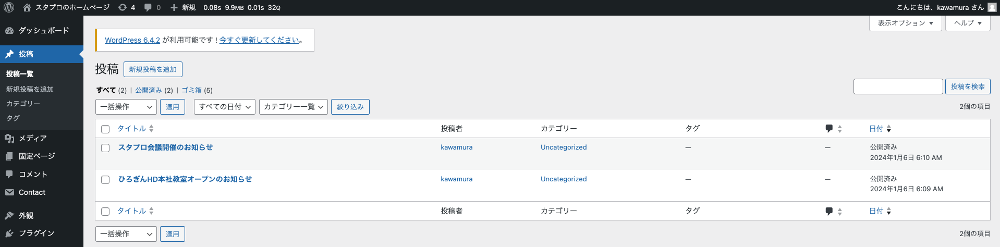
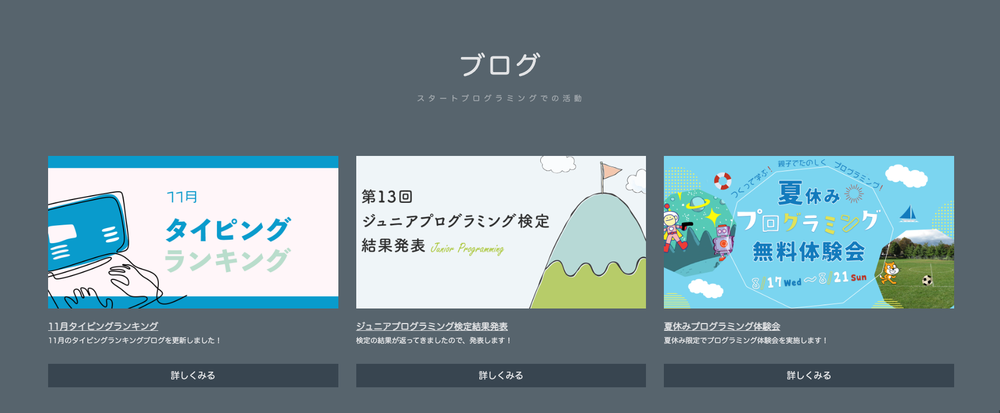

**```php```**
# 14.カスタム投稿タイプの作成
トップページのお知らせの箇所は「投稿」という箇所から作成しているため、HTMLでコードを書いて表示しているわけではありません。

カリキュラム8の復習になりますが、コードでベタ書きをするのではなく、管理画面から内容を作成することで、サイトの更新やメンテナンスがとても楽になります！
また、管理画面からの投稿であればプログラミング未経験の人でも簡単に作成することができるので、お客さん自身でサイトの修正をすることが出来ます。
（将来サイト制作をする際、お客さん自身がメンテナンス出来る状態にしてサイトを渡すことは頻繁にあります）
そこで、トップページの「ブログ」（画像）の箇所も管理画面から投稿できるように設定していきましょう！

現在ある「投稿」とは別に、新たな投稿を作ることを「カスタム投稿タイプを作る」と言ったりします。
①カスタム投稿タイプは「Custom Post Type UI」というプラグインを使って作成していきます。
まずは、プラグインをインストールしましょう。
②カスタム投稿タイプのスラッグや表示名を決め、実際に作成していきます。
今回はブログに関するカスタム投稿タイプなので、スラッグは「blog」、表示名は日本語で「ブログ」とします。
③次は、ブログの中身を作成していきます。
これまでのようにHTMLでブログを作成するのではなく、カスタム投稿タイプを使ってブログを作成していきます。
④作成したブログをトップページ「front-page.php」に表示させるコードを書いていきます。
「front-page.php」に元々書いていたブログを表示するコード(< div class="list-grid" >)で囲まれている箇所を全て削除）し
カスタム投稿タイプで作成したブログを表示するコードを書きます。
先生は解説の都合上コードをコピーして貼り付けていますが、みんなは頑張ってコードを打ってください！
ブログ表示のコード(front-page.php)
```html
'blog',
'posts_per_page'=> 3
];
$the_query = new WP_Query($args);
?>
have_posts()): ?>
have_posts()): $the_query->the_post(); ?>
-
```
それでは、カスタム投稿タイプで作成したブログを表示するコードの解説をしていきます。
```php
$args =[]
```
argsという名前の配列を作成
```php
'post_type' => 'blog',
```
投稿タイプのスラッグを指定（今回はblogというスラッグで作成したのでblogというスラッグを指定しています）
```php
'posts_per_page'=> 3
```
表示件数を指定する（今回のブログは3件表示なので3になっています）
```php
$the_query = new WP_Query($args);
```
「WP_Query」というワードプレスであらかじめ用意されているクラスを使ってインスタンスを生成し、それを「$the_query」という名の変数に代入している（オブジェクトの作成）
「WP_Query」には値を入れたいので、入れたい値を引数「args」で取得してきている
簡単に説明すると、「ブログを3件表示させるための設定を上の4つのコードで行っている」ということになります。
（お決まりのようなものなので、完全に理解しなくても大丈夫です）
```php
have_posts()): ?>
```
もし、先ほど作成した「$the_query」というオブジェクトの中に投稿データがあれば
```php
have_posts()): $the_query->the_post(); ?>
```
投稿がある間中ずっと、投稿のデータを取得してセットする
（セットするだけでは表示はされません。そのセットされたものを目に見える形で表示するためのコードが下のコードになります）
```php
```
投稿のURLを取得して表示する
```php
```
もしサムネイル画像があれば〜
```php
```
サムネイル画像を表示する
```php
```
if文を閉じる
```php
```
ブログのタイトルを表示する
```php
```
投稿のURLを取得して表示する
```php
```
while文を閉じる
```php
```
セットした情報をリセットする（これがないと情報がリセットされず他のコードに影響が出るので、必ず書く必要があります）
## 上記コードを記述して、動画のようにブログが表示されていれば成功です！
このコードは何度も出てくるものになるので、たくさん使うことで理解を深めていきましょう！
最後に、ブログのレイアウトを整えるためにcssを記述をします。
cssは今回学習したい内容ではないので、cssのコードはコピーしてそのまま貼り付けてください。
記述する箇所は93・94・95行目のいずれかに記述してください。
```css
/* style.cssに記述するコード */
.top_blog{
width: 1300px;
}
.top_blog li{
list-style: none;
}
.top_blog ul{
display: grid;
grid-template-columns: repeat(3, 1fr);
gap: 2rem;
}
```
## ユーザースニペットの登録
ブログ表示のコードのように、長いコードを打ち込むのは大変だと思います。
そこで、使いたいコードを簡単に入力することができる「ユーザースニペット」という機能があるので、今後はこれを使用していきましょう！
まずは解説動画を見て、ユーザースニペットの登録方法を学習しましょう！
よく出てくるコードをまとめたので、このコードもユーザースニペットに登録しておきましょう！
スタプロのパソコンを使っている場合、すでに他の生徒が登録している可能性があるため、一度prefixを入力してコードが出てくるか試してみましょう！
もし他の人が登録していれば、新たに登録する必要はないので使い方だけ覚えておきましょう！
```php
{
"the_titleを呼び出す":{
"prefix": "title",
"body": ""
}
"the_contentを呼び出す":{
"prefix": "content",
"body": ""
}
"get_headerを呼び出す":{
"prefix": "gh",
"body": ""
}
"get_footerを呼び出す":{
"prefix": "gf",
"body": ""
}
"wp_headを呼び出す":{
"prefix": "wh",
"body": ""
}
"wp_footerを呼び出す":{
"prefix": "wf",
"body": ""
}
"wp_body_openを呼び出す":{
"prefix": "wo",
"body": ""
}
"home_urlを呼び出す":{
"prefix": "home",
"body": ""
}
"get_theme_file_uriを呼び出す":{
"prefix": "get",
"body": ""
}
"if have posts〜の命令を呼び出す": {
"prefix": "have",
"body": [
"",
" ",
" \">",
" ",
" ",
" ",
" ",
""
],
}
}
```
## 練習問題
なし